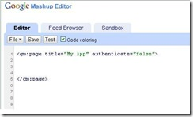
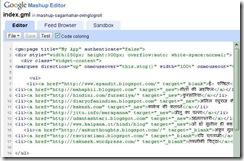
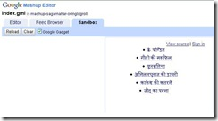

गूगल ने प्रोग्रामर्स या उन लोगों की मदद के लिये जो जावास्क्रिप्ट या अन्य भाषाओं पर काम करते हैं; के लिये गूगल मेशप या माशप) चालू किया है। चालू कब हुआ यह यह तो पता नहीं पर मुझे मेल आज ही मिली। इस टूल की एक खास बात यह है कि हम चिट्ठाकार भी इस की मदद से चिट्ठों की सजावट के लिये बनाये जा रहे HTML कोड या अन्य तरह की स्क्रिप्ट इसमें लिख कर उनका परिणाम देख सकते हैं। इसमें अपने प्रोजेक्ट को सेव भी किया जा सकता है।
गूगल की सूचना के अनुसार अभी यह टेस्टिंग पीरीयड में है सो सिर्फ कुछ ही लोगों को इसकी सुविधा दी गई है, फिर भी अभी इसके लिये आवेदन किया जा सकता है।
HTML, Javascript, CSS और XML में कोड लिखने के बाद उनका परिणाम देखना नये और सीखने वाले लोगों के लिये एक मुश्किल काम था जो अब मेशप की वजह से बहुत ही आसान हो गया है। मैने अपने घूमते ब्लॉगरोल के कोड को इसमें लिखा और उसका परिणाम देखा तो सफल रहा, इन चित्रों को देखिये।


<gm:page title=“My App” authenticate=“false“> और </gm:page> इन दो लाईनों के बीच में आपको अपने कोड लिखने है।




ज्यादा जानकारी के लिये नीचे दी गई कड़ियों को देखे।
The Google Mashup Editor: http://editor.googlemashups.com
Getting Started Guide: http://code.google.com/gme/gettingstarted.html
Screencast Gallery: http://code.google.com/gme/docs/screencasts.html
Discussion Board: http://groups.google.com/group/google-mashup-editor
Documentation: http://code.google.com/gme/
Gallery: http://gallery.googlemashups.com